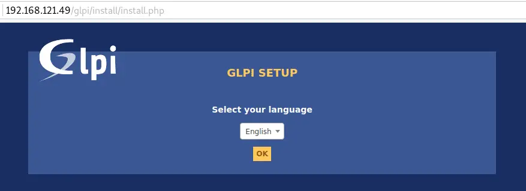
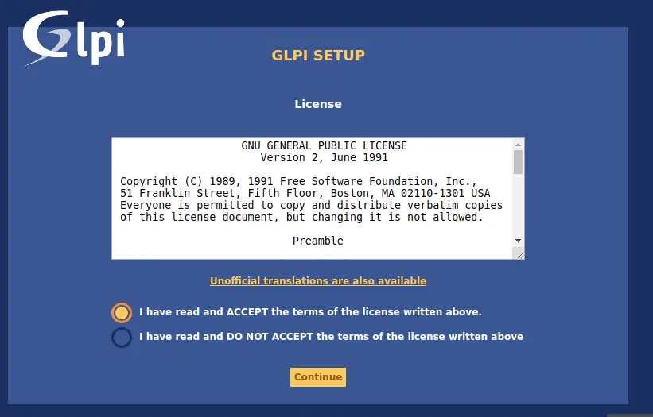
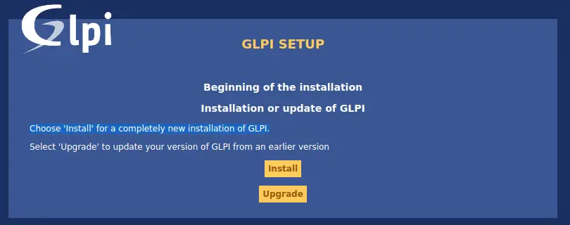
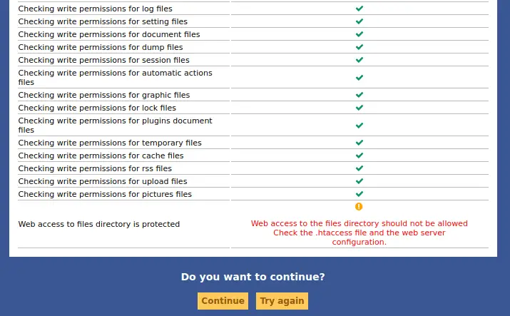
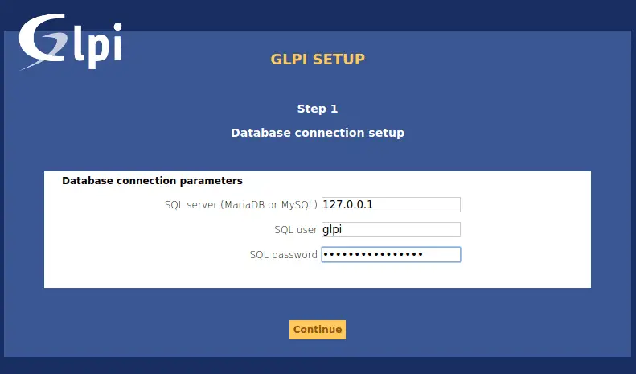
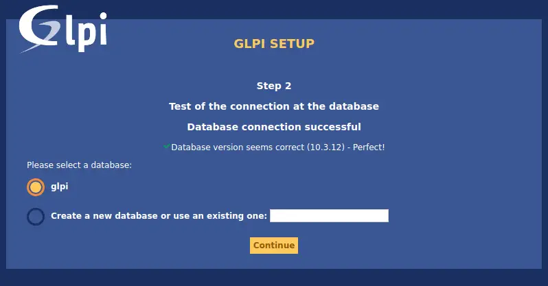

How To Install GLPI on Ubuntu 22.04¶
GLPI is a powerful open source IT service management (ITSM) software tool designed to help you plan and easily manage your IT operations. GLPI allows you to solve problems more efficiently. Its segmentation feature makes it easy to split entities based on their respective administrative policies and allowed expenditure. It has been argued that GLPI support management of large IT infrastructures with millions of assets.
Features of GLPI¶
- Inventory Management – For computers, computers, peripherals, network printers e.t.c.
- Item lifecycle management
- Incidents, requests, problems and changes management
- Data Center Infrastructure Management (DCIM)
- Licenses management (ITIL compliant)
- Management of warranty and financial information (purchase order, warranty and extension, damping)
- Management of contracts, contacts, documents related to inventory items
- Knowledge base and Frequently-Asked Questions (FAQ)
- Asset reservation
All features of GLPI are available on the project website.
Prerequisites¶
GLPI is a Web application that will need:
- a webserver;
- PHP;
- a database.
Web server¶
GLPI requires a web server that supports PHP, like:
- Apache 2 (or more recent);
- Nginx;
- lighttpd;
- Microsoft IIS.
Installing GLPI on Ubuntu 22.04¶
We will cover the steps of installing GLPI on Ubuntu LTS in the remaining sections. Before you can follow this guide along, you need to have a fresh installation of Ubuntu and user account with sudo privileges.
Step 1: Update Ubuntu¶
As usual, ensure your packages list is up to date.
You can also upgrade installed packages by running the following command.
Step 2: Install MariaDB database server¶
GLPI requires a relational database to store its data. Let’s install MariaDB on Ubuntu Linux system by running the following commands:
Create a database and user for GLPI.
sudo mysql -u root -p
CREATE DATABASE glpi;
CREATE USER 'glpi'@'localhost' IDENTIFIED BY 'StrongDBPassword';
GRANT ALL PRIVILEGES ON glpi.* TO 'glpi'@'localhost';
FLUSH PRIVILEGES;
EXIT;
Step 3: Install PHP and Apache¶
We need to have Apache web server and PHP installed for GLPI to run and be accessed from a web interface.
sudo apt -y install php php-{curl,zip,bz2,gd,imagick,intl,apcu,memcache,imap,mysql,cas,ldap,tidy,pear,xmlrpc,pspell,mbstring,json,iconv,xml,gd,xsl}
Then install Apache and its PHP module.
Add the httpOnly flag to the cookie:
Step 4: Download and Install GLPI¶
Download the latest stable release of GLPI. It follows a semantic versioning scheme, on 3 digits, where the first one is the major release, the second the minor and the third the fix release.
Check for the latest stable release on the Downloads page. As of this wirting, this is 10.0.10.
sudo apt-get -y install wget curl
VER=$(curl -s https://api.github.com/repos/glpi-project/glpi/releases/latest|grep tag_name|cut -d '"' -f 4)
wget https://github.com/glpi-project/glpi/releases/download/$VER/glpi-$VER.tgz
Uncompress the downloaded the archive:
Move the created glpi folder to the /var/www/html directory.
Give Apache user ownership of the directory:
Step 5: Configure Hosts File¶
Edit the local hosts file to associate your domain with the server's IP address.
Add a line like this, replacing your_server_ip with the actual IP address and example.com with your domain.
Save and exit the text editor.
Step 6: Configure Virtual Host¶
Apache configuration¶
Here is a virtual host configuration example for Apache 2 web server.
Warning
The following configuration is only suitable for GLPI version 10.0.7 or later.
<VirtualHost *:80>
ServerName glpi.localhost
DocumentRoot /var/www/glpi/public
# If you want to place GLPI in a subfolder of your site (e.g. your virtual host is serving multiple applications),
# you can use an Alias directive. If you do this, the DocumentRoot directive MUST NOT target the GLPI directory itself.
# Alias "/glpi" "/var/www/glpi/public"
<Directory /var/www/glpi/public>
Require all granted
RewriteEngine On
# Redirect all requests to GLPI router, unless file exists.
RewriteCond %{REQUEST_FILENAME} !-f
RewriteRule ^(.*)$ index.php [QSA,L]
</Directory>
</VirtualHost>
Note
If you cannot change the Apache configuration (e.g. you are using a shared hosting), you can use a .htaccess file.
# /var/www/glpi/.htaccess
RewriteBase /
RewriteEngine On
RewriteCond %{REQUEST_URI} !^/public
RewriteRule ^(.*)$ public/index.php [QSA,L]
Create a new virtual host configuration file for your domain using a text editor (like Nano or Vim).
Add the following content, replacing example.com with your domain.
<VirtualHost *:80>
ServerName glpi.example.com
DocumentRoot /var/www/html/glpi/public
# If you want to place GLPI in a subfolder of your site (e.g. your virtual host is serving multiple applications),
# you can use an Alias directive. If you do this, the DocumentRoot directive MUST NOT target the GLPI directory itself.
# Alias "/glpi" "/var/www/html/glpi/public"
<Directory /var/www/html/glpi/public>
Require all granted
RewriteEngine On
# Redirect all requests to GLPI router, unless file exists.
RewriteCond %{REQUEST_FILENAME} !-f
RewriteRule ^(.*)$ index.php [QSA,L]
</Directory>
</VirtualHost>
Save and exit the text editor.
Enable the virtual host configuration.
Then disable the default configuration file.
Rewrite configuration, restart and then test Apache.
Step 7: Finish GLPI installation¶
Visit your server IP or hostname URL on /glpi. If it is your local machine, you can use: http://Server_IP/glpi or just http://Server_IP if you are setup Virtual Host in Apache.
On the first page, Select your language.

Accept License terms and click Continue.

Choose Install for a completely new installation of GLPI.

Confirm that the Checks for the compatibility of your environment with the execution of GLPI is successful.

Configure Database connection

Select glpi database to initialize.

Finish the other setup steps to start using GLPI.
You should get the login page.
Default logins / passwords are:
- glpi/glpi for the administrator account
- tech/tech for the technician account
- normal/normal for the normal account
- post-only/postonly for the postonly account
On first login, you’re asked to change the password. Please set new password before configuring GLPI. This is done under Administration > Users.
This marks the end of installing GLPI on Ubuntu 22.04. The next sections are about adding assets and other IT Management stuff for your infrastructure/environment. For this, please refer to the official GLPI documentation